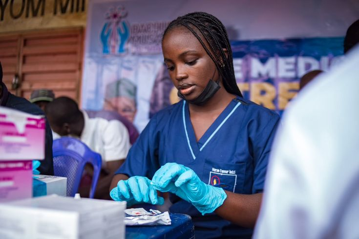
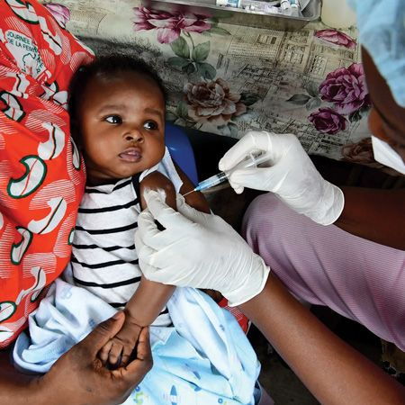
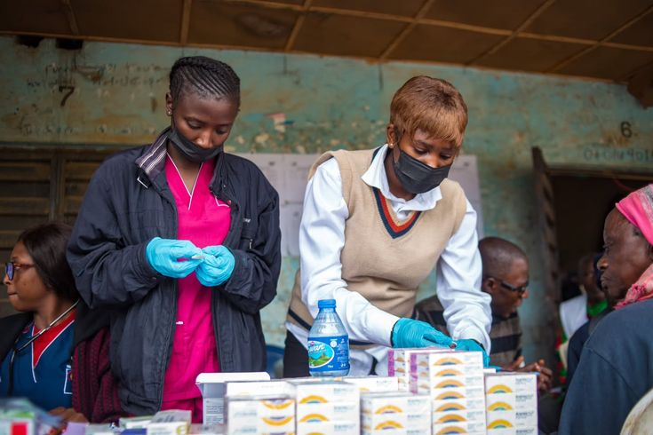

volunteer work at the IDP camps isn't something i talk about much. partly because i'm not sure i have the words for it yet.
project m.a.s.k did games day at kuchingoro. we brought materials and games and the kind of planned activities that are supposed to create normalcy in a situation that is fundamentally not normal. the children showed up with the kind of openness that broke something in my chest a little bit.
i wasn't prepared for how much they would laugh. that sounds stupid to write out. of course children laugh. but there's a specific kind of laugh that comes from people who have less reason to laugh than most. it's louder. more genuine. more urgent. like they're trying to catch as much of the good feeling as possible before it inevitably has to end.





there was this one girl — maybe seven — who played every single game we set up. didn't sit down once. didn't stop smiling. and i kept watching her and thinking: what is it like in your head. what are you carrying that i can't see. and somehow you're still here. still laughing at a game with faulty rules and materials we improvised.
the work itself is straightforward. show up. facilitate. try to create space where normal kid things can happen. joy. competition. the feeling of being good at something. being seen and cheered for by people who aren't your family. what's not straightforward is the knowing that you can create a good afternoon but you can't create a good life.
i think about that a lot. the gratitude for what you can do and the rage at what you can't. you hold both. that's maybe the actual work — learning to hold both things at once without letting either one cancel the other out. she asked for my contact. i took her number. i'll keep showing up.
← Back to Blog